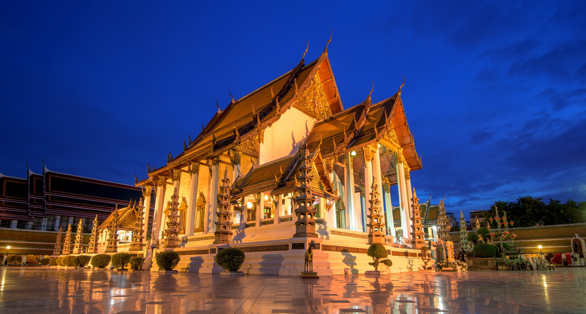
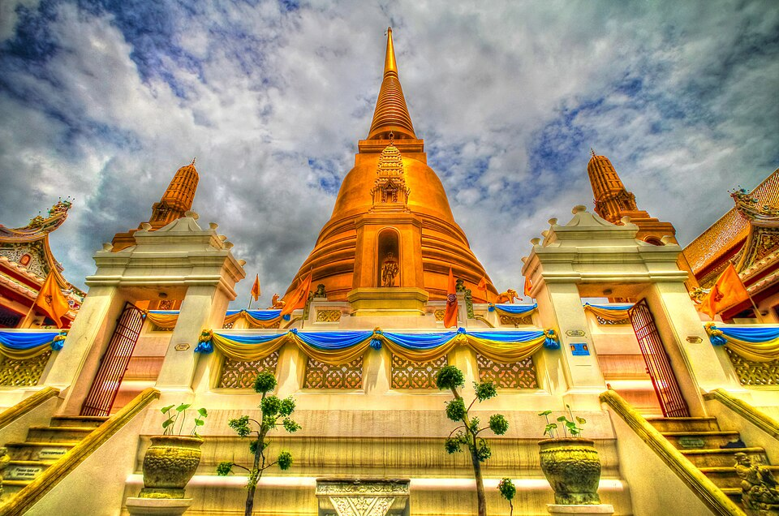

วัดสำคัญในกรุงเทพมหานคร

วัดพระศรีรัตนศาสดาราม (วัดพระแก้ว)
วัดคู่บ้านคู่เมืองของประเทศไทย ตั้งอยู่ภายในพระบรมมหาราชวัง เป็นที่ประดิษฐานพระแก้วมรกต

วัดพระเชตุพนวิมลมังคลาราม (วัดโพธิ์)
วัดเก่าแก่ชื่อดัง มีพระพุทธไสยาสน์ขนาดใหญ่ และเป็นศูนย์กลางการแพทย์แผนไทย

วัดอรุณราชวราราม (วัดแจ้ง)
วัดริมแม่น้ำเจ้าพระยา มีพระปรางค์สูงโดดเด่น เป็นสัญลักษณ์สำคัญของกรุงเทพ

วัดสุทัศนเทพวราราม
วัดสำคัญกลางกรุงเทพ มีพระศรีศากยมุนี และสถาปัตยกรรมไทยที่งดงาม

วัดบวรนิเวศวิหาร
วัดสำคัญทางพระพุทธศาสนา เป็นที่ประทับของสมเด็จพระสังฆราชในอดีต